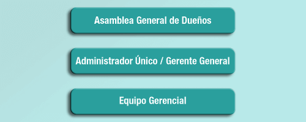
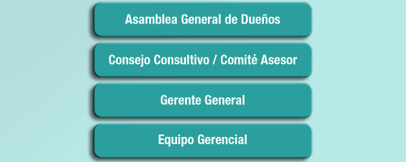
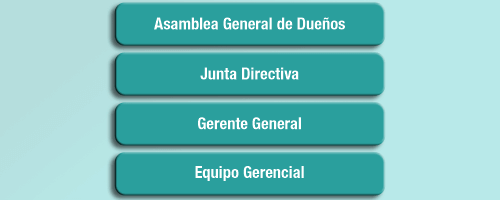
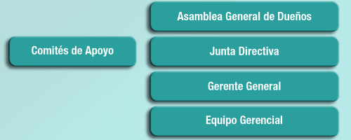

MENÚ
Puedes ir a otra sección del curso
GUARDAR
Graba tu avance en el módulo
AYUDA
Muestra esta ayuda de navegación
AVANZAR
NUMERACIÓN
Muestra el número de la página actual
MÁS INFORMACIÓN
PROGRESO
Muestra gráficamente tu avance


Puedes ir a otra sección del curso
Graba tu avance en el módulo
Muestra esta ayuda de navegación
Muestra el número de la página actual
Muestra gráficamente tu avance
Haz clic en cada sección para ver más información.

Empresas en etapa temprana, comúnmente emprendimientos y micro empresas. Una estructura corta, en la que los roles no son muy claros, los dueños suelen ser parte del equipo gerencial y el gerente, uno de los dueños.
En un segundo momento y con el aumento de los negocios, las operaciones y la actividad empresarial, las empresas en etapa de crecimiento suelen acoger nuevas instancias de gobierno.

Estas son empresas en etapa de desarrollo, o crecimiento activo, en las que se empiezan a conformar equipos de apoyo a la gerencia, inicialmente como consejo consultivo, junta asesora, comité asesor o nombre similar.
Cada órgano de gobierno empieza a delimitar sus roles y se avanza en la separación de funciones y actividades.
En empresas de familia se empiezan a separar los roles de los miembros de la familia frente a su rol como empleado o socio dentro de la empresa y se empieza a definir el protocolo de familia.

Cuando las empresas siguen madurando, empiezan una etapa de desarrollo organizacional, con mayores responsabilidades, incrementan su número de empleados, proveedores, clientes y otros grupos de interés.
Los niveles de gobierno se consolidan, se estructura una junta directiva con roles, responsabilidades legales y obligaciones. La junta que inicialmente es conformada por personas internas de la organización, busca incluir algunos miembros externos, que le dan mayor trascendencia, experiencia y seriedad.
En esta etapa se empiezan a conformar los esquemas de vigilancia de riesgo, cumplimiento de normativas, así como otras directrices y políticas de control.
En cuanto a las empresas de familia, en esta etapa se conforma la junta de familia y se empieza a consolidar el llamado “protocolo de las empresas familiares”.

Por último, las empresas consolidadas, que se encuentran en proceso de expansión. Son empresas que cuentan con amplia presencia en el mercado, con niveles de venta e ingresos superiores, con gran número de empleados, por lo general con diversos canales y segmentos de clientes, así como una gran complejidad en sus operaciones.
Este tipo de empresas requiere una estructura de gobierno sólida, conformada por perfiles de alto nivel y trayectoria, con elevados niveles de relacionamiento.
Su junta directiva se soporta en comités de apoyo, que son encargados de velar por el cumplimiento de normas, gobierno corporativo, control y vigilancia de riesgo, el adecuado manejo de remuneraciones, entre otros.
Página 18 / 36